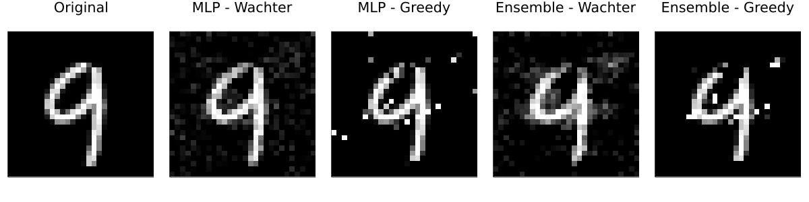
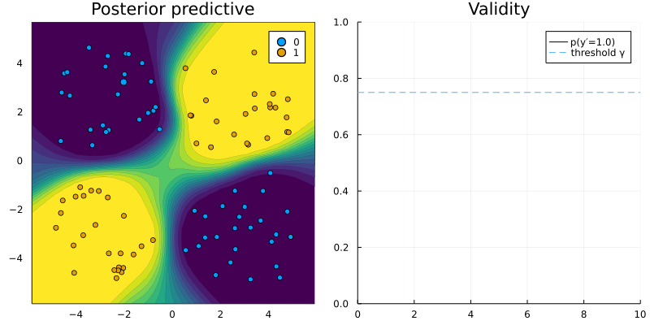

A new tool for explainable AI
Explaining models through counterfactuals
This post introduces a new Julia package for generating counterfactual explanations. The package can be used to explain machine learning algorithms developed and trained in Julia as well as other popular programming languages like Python and R.

Counterfactual explanations, which I introduced in one of my previous posts1, offer a simple and intuitive way to explain black-box models without opening them. Still, as of today there exists only one open-source library that provides a unifying approach to generate and benchmark counterfactual explanations for models built and trained in Python (Pawelczyk et al. 2021). This is great, but of limited use to users of other programming languages 🥲.
Enter CounterfactualExplanations.jl: a Julia package that can be used to explain machine learning algorithms developed and trained in Julia, Python and R. Counterfactual explanations fall into the broader category of explainable artificial intelligence (XAI).
Explainable AI typically involves models that are not inherently interpretable but require additional tools to be explainable to humans. Examples of the latter include ensembles, support vector machines and deep neural networks. This is not to be confused with interpretable AI, which involves models that are inherently interpretable and transparent such as general additive models (GAM), decision trees and rule-based models.
Some would argue that we best avoid explaining black-box models altogether (Rudin 2019) and instead focus solely on interpretable AI. While I agree that initial efforts should always be geared towards interpretable models, stopping there would entail missed opportunities and anyway is probably not very realistic in times of DALL\(\cdot\)E and Co.
Even though […] interpretability is of great importance and should be pursued, explanations can, in principle, be offered without opening the “black box.”
— Wachter, Mittelstadt, and Russell (2017)
This post introduces the main functionality of the new Julia package. Following a motivating example using a model trained in Julia, we will see how easy the package can be adapted to work with models trained in Python and R. Since the motivation for this post is also to hopefully attract contributors, the final section outlines some of the exciting developments we have planned.
Counterfactuals for image data 🖼
To introduce counterfactual explanations I used a simple binary classification problem in my previous post. It involved a linear classifier and a linearly separable, synthetic data set with just two features. This time we are going to step it up a notch: we will generate counterfactual explanations MNIST data. The MNIST dataset contains 60,000 training samples of handwritten digits in the form of 28x28 pixel grey-scale images (LeCun 1998). Each image is associated with a label indicating the digit (0-9) that the image represents.
The CounterfactualExplanations.jl package ships with two black-box models that were trained to predict labels for this data: firstly, a simple multi-layer perceptron (MLP) and, secondly, a corresponding deep ensemble. Originally proposed by Lakshminarayanan, Pritzel, and Blundell (2016), deep ensembles are really just ensembles of deep neural networks. They are still among the most popular approaches to Bayesian deep learning.2
Black-box models
The code below loads relevant packages along with the MNIST data and pre-trained models.
Show the code
# Load package, models and data:
using CounterfactualExplanations, Flux
using CounterfactualExplanations.Data: mnist_data, mnist_model, mnist_ensemble
data, X, ys = mnist_data()
model = mnist_model()
ensemble = mnist_ensemble()
counterfactual_data = CounterfactualData(X,ys;domain=(0,1))While the package can currently handle a few simple classification models natively, it is designed to be easily extensible through users and contributors. Extending the package to deal with custom models typically involves only two simple steps:
- Subtyping: the custom model needs to be declared as a subtype of the package-internal type
AbstractFittedModel. - Multiple dispatch: the package-internal functions
logitsandprobsneed to be extended through custom methods for the new model type.
The following code implements these two steps first for the MLP and then for the deep ensemble.
Show the code
using CounterfactualExplanations.Models
import CounterfactualExplanations.Models: logits, probs
# MLP:
# Step 1)
struct NeuralNetwork <: Models.AbstractFittedModel
model::Any
end
# Step 2)
logits(M::NeuralNetwork, X::AbstractArray) = M.model(X)
probs(M::NeuralNetwork, X::AbstractArray)= softmax(logits(M, X))
M = NeuralNetwork(model)
# Deep ensemble:
using Flux: stack
# Step 1)
struct FittedEnsemble <: Models.AbstractFittedModel
ensemble::AbstractArray
end
# Step 2)
using Statistics
logits(M::FittedEnsemble, X::AbstractArray) = mean(stack([m(X) for m in M.ensemble],3),dims=3)
probs(M::FittedEnsemble, X::AbstractArray) = mean(stack([softmax(m(X)) for m in M.ensemble],3),dims=3)
M_ensemble = FittedEnsemble(ensemble)Counterfactual generators
Next, we need to specify the counterfactual generators we want to use. The package currently ships with two default generators that both need gradient access: firstly, the generic generator introduced by Wachter, Mittelstadt, and Russell (2017) and, secondly, a greedy generator introduced by Schut et al. (2021).
The greedy generator is designed to be used with models that incorporate uncertainty in their predictions such as the deep ensemble introduced above. It works for probabilistic (Bayesian) models, because they only produce high-confidence predictions in regions of the feature domain that are populated by training samples. As long as the model is expressive enough and well-specified, counterfactuals in these regions will always be realistic and unambiguous since by construction they should look very similar to training samples. Other popular approaches to counterfactual explanations like REVISE (Joshi et al. 2019) and CLUE (Antorán et al. 2020) also play with this simple idea.
The following code instantiates the two generators for the problem at hand.
Show the code
generic = GenericGenerator(;loss=:logitcrossentropy)
greedy = GreedyGenerator(;loss=:logitcrossentropy)Explanations
Once the model and counterfactual generator are specified, running counterfactual search is very easy using the package. For a given factual (x), target class (target) and data set (counterfactual_data), simply running
generate_counterfactual(x, target, counterfactual_data, M, generic)will generate the results, in this case using the generic generator (generic) for the MLP (M). Since we have specified two different black-box models and two different counterfactual generators, we have four combinations of a model and a generator in total. For each of these combinations I have used the generate_counterfactual function to produce the results in Figure 1.
In every case the desired label switch is in fact achieved, but arguably from a human perspective only the counterfactuals for the deep ensemble look like a four. The generic generator produces mild perturbations in regions that seem irrelevant from a human perspective, but nonetheless yields a counterfactual that can pass as a four. The greedy approach clearly targets pixels at the top of the handwritten nine and yields the best result overall. For the non-Bayesian MLP, both the generic and the greedy approach generate counterfactuals that look much like adversarial examples: they perturb pixels in seemingly random regions on the image.

Language interoperability 👥
The Julia language offers unique support for programming language interoperability. For example, calling R or Python is made remarkably easy through RCall.jl and PyCall.jl, respectively. This functionality can be leveraged to use CounterfactualExplanations.jl to generate explanations for models that were developed in other programming languages. At this time there is no native support for foreign programming languages, but the following example involving a torch neural network trained in R demonstrates how versatile the package is.3
Explaining a torch model
We will consider a simple MLP trained for a binary classification task. As before we first need to adapt this custom model for use with our package. The code below the two necessary steps - sub-typing and method extension. Logits are returned by the torch model and copied from the R environment into the Julia scope. Probabilities are then computed inside the Julia scope by passing the logits through the sigmoid function.
Show the code
using Flux
using CounterfactualExplanations, CounterfactualExplanations.Models
import CounterfactualExplanations.Models: logits, probs # import functions in order to extend
# Step 1)
struct TorchNetwork <: Models.AbstractFittedModel
nn::Any
end
# Step 2)
function logits(M::TorchNetwork, X::AbstractArray)
nn = M.nn
y = rcopy(R"as_array($nn(torch_tensor(t($X))))")
y = isa(y, AbstractArray) ? y : [y]
return y'
end
function probs(M::TorchNetwork, X::AbstractArray)
return σ.(logits(M, X))
end
M = TorchNetwork(R"model")Compared to models trained in Julia, we need to do a little more work at this point. Since our counterfactual generators need gradient access, we essentially need to allow our package to communicate with the R torch library. While this may sound daunting, it turns out to be quite manageable: all we have to do is respecify the function that computes the gradient with respect to the counterfactual loss function so that it can deal with the TorchNetwork type we defined above. That is all the adjustment needed to use CounterfactualExplanations.jl for our custom R model. Figure 2 shows a counterfactual path for a randomly chosen sample with respect to the MLP trained in R.
You may have stumbled across the term respecify above: does it really seem like a good idea to just replace an existing function from our package? Surely not! There are certainly better ways to go about this, which we will consider when adding native support for Python and R models in future package releases. Which brings us to our final section …
Show the code
import CounterfactualExplanations.Generators: ∂ℓ
using LinearAlgebra
# Countefactual loss:
function ∂ℓ(
generator::AbstractGradientBasedGenerator,
counterfactual_state::CounterfactualState)
M = counterfactual_state.M
nn = M.nn
x′ = counterfactual_state.x′
t = counterfactual_state.target_encoded
R"""
x <- torch_tensor($x′, requires_grad=TRUE)
output <- $nn(x)
loss_fun <- nnf_binary_cross_entropy_with_logits
obj_loss <- loss_fun(output,$t)
obj_loss$backward()
"""
grad = rcopy(R"as_array(x$grad)")
return grad
end
We need you! 🫵
The ambition for CounterfactualExplanations.jl is to provide a go-to place for counterfactual explanations to the Julia community and beyond. This is a grand ambition, especially for a package that has so far been built by a single developer who has little prior experience with Julia. We would therefore very much like to invite community contributions. If you have an interest in trustworthy AI, the open-source community and Julia, please do get involved! This package is still in its early stages of development, so any kind of contribution is welcome: advice on the core package architecture, pull requests, issues, discussions and even just comments below would be much appreciated.
To give you a flavor of what type of future developments we envision, here is a non-exhaustive list:
- Native support for additional counterfactual generators and predictive models including those built and trained in Python or R.
- Additional datasets for testing, evaluation and benchmarking.
- Improved preprocessing including native support for categorical features.
- Support for regression models.
Finally, if you like this project but don’t have much time, then simply sharing this article or starring the repo on GitHub would also go a long way.
Further reading 📚
If you’re interested in learning more about this development, feel free to check out the following resources:
- Package docs: [stable], [dev].
- Contributor’s guide.
- GitHub repo.
References
Footnotes
Citation
@online{altmeyer2022,
author = {Patrick Altmeyer},
title = {A New Tool for Explainable {AI}},
date = {2022-04-20},
langid = {en}
}